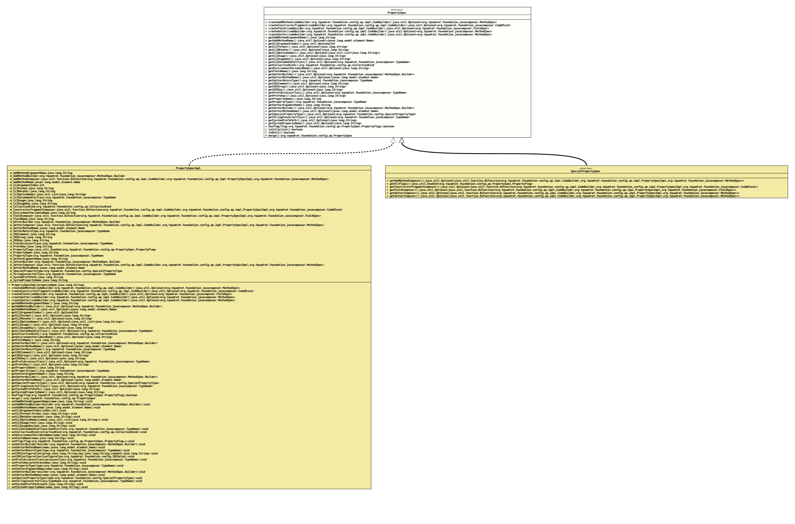

Interface PropertySpec
- All Known Subinterfaces:
SpecialPropertySpec
- All Known Implementing Classes:
CharsetProperty,ClockProperty,LocaleProperty,MessagePrefixProperty,ProcessIdProperty,PropertySpecImpl,RandomProperty,ResourceBundleProperty,SessionKeyProperty,SpecialPropertySpecBase,TimeZoneProperty
- Author:
- Thomas Thrien (thomas.thrien@tquadrat.org)
- Version:
- $Id: PropertySpec.java 1010 2022-02-05 19:28:36Z tquadrat $
- Since:
- 0.1.0
- UML Diagram
-

UML Diagram for "org.tquadrat.foundation.config.ap.PropertySpec"
{kind=link}
-
Nested Class Summary
Nested ClassesModifier and TypeInterfaceDescriptionstatic enumThe flags for a property. -
Method Summary
Modifier and TypeMethodDescriptioncreateAddMethod(CodeBuilder codeBuilder) Creates the specification of the 'add' method for this property.createConstructorFragment(CodeBuilder codeBuilder) Creates a code block that is a fragment for the constructor of the new configuration bean and that initialises this property.createField(CodeBuilder codeBuilder) Creates the field specification for this property.createGetter(CodeBuilder codeBuilder) Creates the specification of the getter for this property.createSetter(CodeBuilder codeBuilder) Creates the specification of the setter for this property.Returns the name of the 'add' method's argument.Returns the name of the 'add' method for this property.Returns the index for an argument on the command line.Returns the special CLI format.Returns the name of the CLI meta variable for this property.Returns the CLI option names.Returns the CLI usage text for this property.Returns the CLI usage key for this property.Returns the CLI value handler class for this property.Returns the kind of collection for this property.Returns the default value for an environment variable or a system property.Returns the name of the environment variable that is used to initialise this property.default StringReturns the name of the field for the property.Returns a builder for the getter for this property.Returns the name of the getter method name.Returns the return type of the getter.Returns the comment for this property in theINIfile.Returns the group for this property in theINIfile.Returns the key for this property in theINIfile.Returns thePreferencesaccessor class.Returns thePreferenceskey for this property.Returns the name of the configuration property.Returns the property type.Returns the name of the setter's argument.Returns a builder for the setter for this property.Returns the name of the setter method name.Return the 'speciality' type for this property.Returns the class that implements the String converter for the type of this property.Returns the path to the SYSTEMPreferencesnode that holds the data for the initialisation of this property.Returns the name of the system property that is used to initialise this property.booleanChecks whether the given flag is set for this property.default booleanChecks whether this property is a collection of some kind.booleanisEnum()Returns the flag that indicates whether the property is anenumtype.default booleanisOnCLI()Checks whether this property is exposed to the CLI.merge()'Merges' the attributes from a special property with the attributes retrieved from the configuration bean specification and returns a new instance ofPropertySpec.
-
Method Details
-
createAddMethod
Creates the specification of the 'add' method for this property.- Parameters:
codeBuilder- The factory for the code generation.- Returns:
- An instance of
Optionalthat holds the method specification.
-
createConstructorFragment
Creates a code block that is a fragment for the constructor of the new configuration bean and that initialises this property.- Parameters:
codeBuilder- The factory for the code generation.- Returns:
- An instance of
Optionalthat holds the code block.
-
createField
Creates the field specification for this property.- Parameters:
codeBuilder- The factory for the code generation.- Returns:
- An instance of
Optionalthat holds the field specification.
-
createGetter
Creates the specification of the getter for this property.- Parameters:
codeBuilder- The factory for the code generation.- Returns:
- An instance of
Optionalthat holds the method specification.
-
createSetter
Creates the specification of the setter for this property.- Parameters:
codeBuilder- The factory for the code generation.- Returns:
- An instance of
Optionalthat holds the method specification.
-
getAddMethodArgumentName
Returns the name of the 'add' method's argument.- Returns:
- The argument name; is probable
nullwhengetAddMethodName()returnsOptional.empty().
-
getAddMethodName
Returns the name of the 'add' method for this property.- Returns:
- An instance of
Optionalthat holds the name of the add method.
-
getCLIArgumentIndex
Returns the index for an argument on the command line.
The return value will be empty if the property is not a CLI argument.
- Returns:
- An instance of
OptionalIntthat holds the index. - See Also:
-
getCLIFormat
Returns the special CLI format.- Returns:
- An instance of
Optionalthat holds the format. - See Also:
-
getCLIMetaVar
Returns the name of the CLI meta variable for this property.- Returns:
- An instance of
Optionalthat holds the name of the meta variable. - See Also:
-
getCLIOptionNames
Returns the CLI option names. The mandatory first name in the list is the primary name, the optional others are the aliases.
The return value will be empty if the property is not a CLI option.
- Returns:
- An instance of
Optionalthat holds the option names. - See Also:
-
getCLIUsage
Returns the CLI usage text for this property. This text will not be localised.- Returns:
- An instance of
Optionalthat holds the usage text. - See Also:
-
getCLIUsageKey
Returns the CLI usage key for this property. This key is used to retrieve a localised usage text.- Returns:
- An instance of
Optionalthat holds the usage key. - See Also:
-
getCLIValueHandlerClass
Returns the CLI value handler class for this property. -
getCollectionKind
Returns the kind of collection for this property.- Returns:
- The collection kind.
-
getEnvironmentDefaultValue
Returns the default value for an environment variable or a system property. This is used to initialise this property when it has the annotation
@EnvironmentVariableor@EnvironmentVariable, but no value is provided.A default value is mandatory when the annotated property has a primitive type.
- Returns:
- An instance of
Optionalthat holds the default value.
-
getEnvironmentVariableName
Returns the name of the environment variable that is used to initialise this property.- Returns:
- An instance of
Optionalthat holds the environment variable name. - See Also:
-
getFieldName
Returns the name of the field for the property.- Returns:
- The field name.
-
getGetterBuilder
Returns a builder for the getter for this property.- Returns:
- An instance of
Optionalthat holds the builder.
-
getGetterMethodName
Returns the name of the getter method name. If there is no name for the method, it will not be generated.- Returns:
- An instance of
Optionalthat holds the name of the getter method.
-
getGetterReturnType
Returns the return type of the getter. This is not necessarily the same as the property type.- Returns:
- The getter's return type.
-
getINIComment
Returns the comment for this property in theINIfile.- Returns:
- An instance of
Optionalthat holds the comment.
-
getINIGroup
Returns the group for this property in theINIfile.- Returns:
- An instance of
Optionalthat holds the group name.
-
getINIKey
Returns the key for this property in theINIfile.- Returns:
- An instance of
Optionalthat holds the key.
-
getPrefsAccessorClass
Returns the
Preferencesaccessor class.This is used when this property is linked to a preference, but also to initialise it from a SYSTEM preference.
-
getPrefsKey
Returns the
Preferenceskey for this property.This is used when this property is linked to a preference, but also to initialise it from a SYSTEM preference. In first case, the name is defaulted to the property name, while it is mandatory otherwise.
- Returns:
- An instance of
Optionalthat holds the preferences key for this property. - See Also:
-
getPropertyName
Returns the name of the configuration property.- Returns:
- The name.
-
getPropertyType
Returns the property type.- Returns:
- The property type.
-
getSetterArgumentName
Returns the name of the setter's argument.- Returns:
- The argument name; is probably
nullwhengetSetterMethodName()returnsOptional.empty().
-
getSetterBuilder
Returns a builder for the setter for this property.- Returns:
- An instance of
Optionalthat holds the builder.
-
getSetterMethodName
Returns the name of the setter method name. If there is no name for the method, it will not be generated.- Returns:
- An instance of
Optionalthat holds the name of the setter method.
-
getSpecialPropertyType
Return the 'speciality' type for this property.- Returns:
- An instance of
Optionalthat holds the speciality type.
-
getStringConverterClass
Returns the class that implements the String converter for the type of this property.- Returns:
- An instance of
Optionalthat holds the implementation class forStringConverter.
-
getSystemPrefsPath
Returns the path to the SYSTEMPreferencesnode that holds the data for the initialisation of this property.- Returns:
- An instance of
Optionalthat holds the path. - See Also:
-
getSystemPropertyName
Returns the name of the system property that is used to initialise this property.- Returns:
- An instance of
Optionalthat holds the system property name. - See Also:
-
hasFlag
Checks whether the given flag is set for this property.- Parameters:
flag- The flag to test for.- Returns:
trueif the flag is set,falseotherwise.
-
isCollection
Checks whether this property is a collection of some kind.- Returns:
trueif this property is a collection,falseotherwise.
-
isEnum
boolean isEnum()Returns the flag that indicates whether the property is anenumtype.- Returns:
trueif the property type is anenum,falseotherwise.
-
isOnCLI
Checks whether this property is exposed to the CLI. This means that it has either the flagPropertySpec.PropertyFlag.PROPERTY_IS_ARGUMENTor thePropertySpec.PropertyFlag.PROPERTY_IS_OPTIONset to it.- Returns:
trueif the property is exposed to the CLI,falseotherwise.
-
merge
'Merges' the attributes from a special property with the attributes retrieved from the configuration bean specification and returns a new instance of
PropertySpec. The original instance remains unchanged.If the property is not a special property (the flag
PropertySpec.PropertyFlag.PROPERTY_IS_SPECIALis not set), this instance will be returned.- Returns:
- The effective property specification.
-